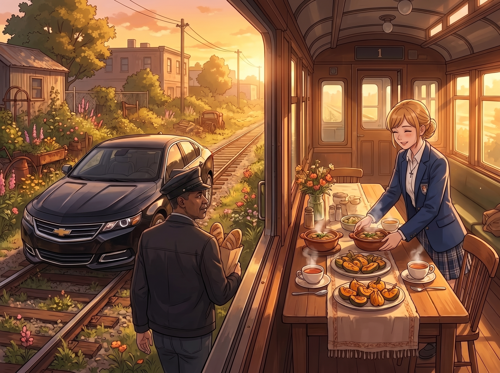

晚餐哲學交流

傍晚六點半，波特蘭東區的舊鐵道花園被濃郁的落日餘暉染成琥珀色。
一輛一塵不染的黑色雪佛蘭轎車在鐵軌外側平穩熄火。Robert McCall 依舊穿著那件深色夾克，手裡拎著一袋剛在街角烘焙坊買的無花果黑麥麵包，步履沉穩地走進一號車廂。
車廂長木桌旁，Kate 已經擺好了剛出爐的草本迷迭香燉牛肉、烤小南瓜與熱蘋果茶。
一、 氣場收斂與老兵的「餐桌觀察」
「晚上好，女士們。」Robert 摘下平頂帽放在門口的掛鉤上，目光溫和地掃過整潔溫馨的長桌，隨後將麵包遞給 Kate，「打擾你們的晚餐了。」
「完全不打擾，McCall 先生！」Kate 眉眼彎彎地接過麵包，為他拉開長木桌正中間的椅子，「Miles 今天非常努力，車削出來的黃銅零件甚至沒有一絲毛邊呢。」
Robert 在椅子上落座，坐姿挺拔卻毫無壓迫感。
他眼角的餘光在三秒內完成了對整個環境的掃描——他看到了角落點唱機上方那塊標註著「特許認證」的黃銅銘牌、看見了二樓樓梯口擺放整齊的防護工具、也看見了桌子對面正瘋狂朝著 Miles 擠眉弄眼的 Chloe。
「Price 小姐，」Robert 拿起餐巾，嘴角浮起一抹極淡的笑意，語氣平靜如水，「你看起來有很多問題想問，而且似乎已經有了一個非常生動但危險的答案。」
「噗——」Chloe 剛喝進嘴裡的冰鎮櫻桃可樂差點噴出來。她猛地咳嗽了兩聲，抓了抓藍髮，索性攤牌般把手肘往桌上一支：
「好吧，McCall 先生！老娘就直說了——我和 Max 以前在阿卡迪亞灣差點被龍捲風和瘋子連環殺手送上天，我繼父還是個天天在家裡裝監控的退伍海軍陸戰隊狂人。所以我對『真正的高手』有著野獸般的直覺。你絕對不只是個開網約車的吧？」
二、 兩種「修復」：從零件到靈魂的生活哲學
桌上的氣氛短暫安靜了一瞬，連正在切牛肉的 Victoria 都停下了手中的銀刀，抬起頭看向這位長者。
Robert 沒有直接回答身份的問題。他優雅地切開一塊黑麥麵包，放慢了語速，聲音低沉且富有磁性：
「每個人在世界上都有自己的工作。有些人的工作是製造混亂，而有些人的工作，是把被弄亂的秩序重新擺正。」
他轉頭看了一眼坐在身旁、眼神專注的 Miles，又看了看桌上的四個女孩：
「今天下午我看過 Miles 在二號車廂外牆打的草稿了。線條很穩，沒有了以前在街頭時那種想要摧毀一切的浮躁。這證明你們給予他的不只是工具的使用方法，而是讓他明白了——『破壞只需要一秒鐘，但創造與修復，需要一個人用全部的專注去對待』。」
Max 推了推黑框眼鏡，輕聲接話：「在暗房裡也是這樣。一張底片如果曝光過度或者被劃傷，我們不會把它扔掉，而是會想辦法用不同的藥水比例與遮擋技巧，把原本藏在陰影裡的光找回來。」
「說得很對，Maxine。」Robert 微微頷首，眼神裡流露出真誠的讚許，「人生也是一種曝光。有時候你拿到了一張糟糕的底片，那不是你的錯；但如何調配定影液、如何把剩下的畫面洗清楚，決定權始終在你自己的手上。」
三、 點唱機與一美元硬幣的致敬
晚餐在溫馨而深沉的交談中漸漸走向尾聲。
Victoria 破例給 Robert 倒了一杯自己珍藏的波爾多紅酒，眼神中帶著少有的全然敬意：「McCall 先生，基金會已經正式通過了 Miles 的實訓全額資助計劃。只要他願意，波特蘭東區隨時有他的專屬畫室與機械工位。」
「謝謝你，Chase 小姐。你的嚴謹與慷慨，是這個年輕人最需要的指引。」Robert 舉杯致意。
臨走前，Robert 站在那台 1960 年代的老式點唱機前停下了腳步。
他從口袋裡摸出一枚磨得光滑的一美元硬幣，精準地投入投幣孔，隨後按下了《滔天暗示》City Pop 重編版的按鈕。
伴隨著輕快搖曳的合成器前奏與清脆吉他掃弦，Robert 轉過身，目光深邃地注視著四個女孩與 Miles：
「這首歌的節奏很好。即使歌詞在談論風暴與沉沒，但旋律依然在向前奔跑。」
他戴上平頂帽，朝著大家微微躬身：
「繼續守護你們這座小小的燈塔吧，姑娘們。世界有時候很吵，但只要這裡的齒輪和音樂還在轉動，就總有人能找到回家的路。」
看著 Robert 帶著 Miles 步入夜色的沉穩背影，Chloe 靠在車廂門框上，手裡握著剛才被 Robert 隨手用單手校準回零位的重型扭力扳手，忍不住吹了個長長的口哨：
「老天……長官，我收回之前所有的話。這老爺子不是什麼殺手——他簡直就是一個穿著夾克、帶著哲學書的黑夜天使。」
微風吹過鐵道花園，點唱機的歌聲在初秋的夜空下輕柔迴盪，為這間充滿奇蹟的小工坊，注入了一份前所未有的安寧與厚重。